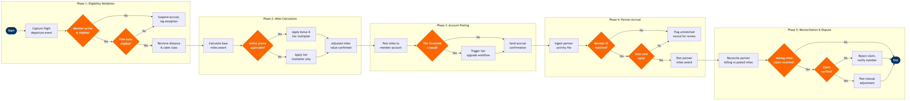

| Step | L4 Step Name | KPI / Target | Pain Point / Risk | Gate |
|---|---|---|---|---|
| 1.1 | Capture flight departure event from PSS | Accrual events captured within 24h of departure ≥99% | Amadeus Altéa departure events can be delayed during irregular ops; cancelled-then-reprotected flights generate duplicate accrual triggers requiring deduplication logic not natively supported in Altéa | |
| 1.2 | Validate member account active status | Zero false-positive account suspensions per month | Accounts suspended for fraud screening block legitimate accruals; reactivation SLA is 5 business days — members with pending fraud reviews miss accruals with no automatic back-posting upon clearance | ⚠ |
| 1.3 | Verify ticket eligibility by fare basis code | 100% of ineligible fare classes (award tickets, staff travel) correctly excluded | ATPCO fare basis eligibility mappings require quarterly refresh; stale mappings incorrectly block accruals on newly introduced fare classes until the next scheduled update cycle | ⚠ |
| 2.1 | Retrieve flown distance and cabin class data | Distance retrieval accuracy ≥99.9% vs. IATA great-circle distances | Codeshare segments report operating-carrier distance rather than marketing-carrier distance; causes systematic under-accrual on partner-operated flights when the operating carrier's city pair distance is shorter than the ticketed routing | |
| 2.2 | Calculate base miles using distance × fare multiplier | Base miles calculation latency <3 seconds per transaction; calculation error rate <0.01% | Multiplier tables must be synchronised between Comarch Loyalty and Amadeus Altéa; version mismatch after a programme rule change causes accrual discrepancies requiring a manual batch correction job affecting tens of thousands of accounts | |
| 2.3 | Apply elite tier and promotional bonus multipliers | Promotional miles correctly applied in ≥99.5% of eligible transactions | Stacked promotions (elite tier bonus + partner co-brand card bonus + targeted campaign) can exceed programme liability caps; no automated cap enforcement exists in the current Comarch configuration — over-issuance discovered only at month-end liability review | ⚠ |
| 3.1 | Post miles transaction to member account ledger | Miles posted within 3 business days of flight departure (IATA Loyalty Standard); batch failure rate <0.1% | Batch posting jobs can fail silently under high transaction volume during peak travel seasons; reconciliation lag of up to 72h before failures are detected means members contact the call centre before the system self-corrects, driving avoidable contact volume | |
| 3.2 | Evaluate qualifying miles for tier re-qualification | Tier re-qualification evaluated within 24h of miles posting; tier status error rate <0.05% | Qualifying miles rollover logic at the programme year boundary is hard-coded in Comarch and requires a manual configuration change each January; incorrect rollover logic has historically caused erroneous tier downgrades affecting high-value members | ⚠ |
| 3.3 | Send accrual confirmation notification to member | Notification delivery rate ≥97%; unsubscribe rate <0.5% per campaign | Multiple accrual events on the same travel day (flight segment + lounge visit + partner hotel) trigger separate notifications; no deduplication or daily digest batching in the current Salesforce journey configuration — member over-notification drives opt-outs among frequent flyers | |
| 4.1 | Ingest daily partner accrual activity file | Partner file ingested and schema-validated within 4h of scheduled receipt; file rejection rate <2% | Partner file format inconsistencies (non-standard delimiters, missing member IDs, variant date formats) cause up to 8% record rejection rate per cycle; no automated partner notification on rejection — manual follow-up adds 1–3 day processing delay | |
| 4.2 | Match partner activity records to member accounts | Member account match rate ≥95% of valid partner records within 24h of ingestion | Hotel and car rental partners submit member IDs in non-standard formats (e.g., with country prefix or leading zeros stripped); no automated fuzzy-match fallback in Comarch means unmatched records queue indefinitely rather than routing to a resolution workflow | ⚠ |
| 4.3 | Validate miles award against partner rate card | Rate card accuracy ≥99% vs. signed partner agreement; rate discrepancy resolution within 5 business days | Partner rate card amendments effective mid-cycle are not always communicated via API update; manual rate table maintenance in Comarch lags partner notification by 3–7 days, causing systematic under- or over-accrual until the next scheduled sync | ⚠ |
| 5.1 | Reconcile partner-posted miles vs. billing invoice | Monthly partner reconciliation completed within 5 business days of period close; variance <0.5% of total billed miles | Partner billing files use proprietary transaction IDs that differ from loyalty system reference numbers; cross-reference mapping is maintained in a manually updated Excel file — a single point of failure that causes reconciliation delays when the file owner is unavailable | |
| 5.2 | Receive and triage missing miles claim from member | Missing miles claim resolved within 21 days (IATA Resolution 9984 standard); first-contact resolution rate ≥60% | Members frequently submit claims without required documentation (flight coupon number, original partner receipt); incomplete claims account for ~35% of total case volume and require a second contact cycle, inflating average handle time and breaching SLA on high-case-volume days | ⚠ |
| 5.3 | Post manual miles adjustment for approved claims | Manual adjustments audited within 48h of posting; adjustment error rate <0.5%; high-value adjustments (>10,000 miles) require dual approval | Comarch manual override permits posting to suspended or fraud-flagged accounts without a blocking control; no secondary approval gate exists for high-value adjustments — creates an audit and fraud risk that is currently mitigated only by weekly spot-check reviews rather than systematic controls |